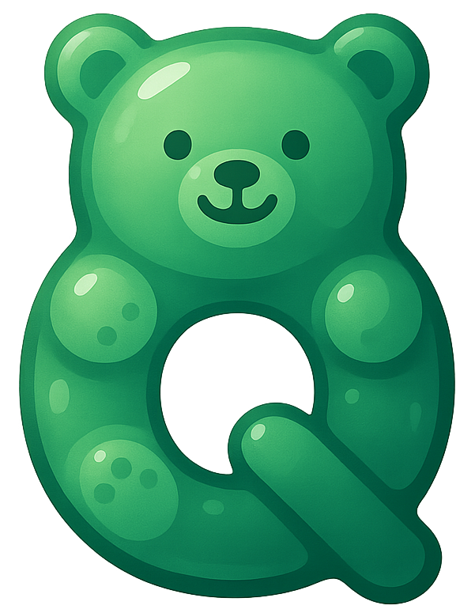

CQE | AI小教室-開課時段調查
學員登入
Employee ID
登入
* 以員工編號登入。登入後僅能填寫可上課時段與查看個人狀態。
Admin 登入
帳號
密碼
登入
參加時段
回覆統計
課程/名單
登出
清空
儲存
載入
匯出已回覆
匯出時段統計
已回覆 : 0人 / TTL: 0人
部門
組站
ASE_ID
姓名
Name
未回覆: 0人
部門
組站
ASE_ID
姓名
Name
顯示前 N 名
時段統計
Seq
星期
開始
結束
人數
課程/期別建立
課程標題
期別名稱
最多人數 (可空)
建立課程與期別
名單上傳 / 匯出
上傳
下載
載入
名單：— 人
部門
組站
地點
ASE_ID
姓名
Name
部門
組站
ASE_ID
姓名
Name
課程名單（CQE | AI Class）
載入課程
按「載入課程」以顯示外部 Supabase 專案的 course 表